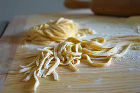

Basic Homemade Pasta
Go back to Odin Recipes

Description
A easy homemade pasta recipe wich yields two or three servings
Let it dry 20 minutes before cutting
Ingredients
- Pasta
- ½ teaspoon salt
- 1 egg, beaten
- 2 tablespoons water
Steps
- Gather all ingredients
- Combine flour and salt in a medium bowl. Make a well in the center and add beaten egg. Mix well until a stiff dough forms, adding up to 2 tablespoons water if needed.
- Knead dough on a lightly floured surface until smooth, 3 to 4 minutes. Wrap dough and let rest for 30 minutes to 1 hour.
- Roll dough by hand or with a pasta machine to desired thickness, then cut into strips of desired width and length.
For more recipes check the recipes below
Enjoy!